How to Upload Data: A Step-by-Step Guide
This guide provides step-by-step instructions for uploading your porous media datasets to the Digital Porous Media Portal (DPM). Following these steps helps ensure your data is well-described, discoverable, and usable by the community.
Data Model
Before you begin uploading, it's helpful to understand that the Digital Porous Media Portal (DPMP) uses a data model to organize and describe datasets. This data model defines how your files, datasets (previously, in Digital Rocks Portal, datasets were called projects), and metadata are structured within the portal. Mandatory metadata fields are marked with asterisks (*), indicating they are required for publication and discoverability. Some fields are highlighted in green—these represent updates or new fields added since the previous model. Metadata requirements may vary depending on the data type (e.g., image, raw binary, processed data). By following this model, DPMP ensures that all datasets are consistently described, making them easier to search, interpret, and reuse.
Below is a visual overview of the data model and its metadata requirements:
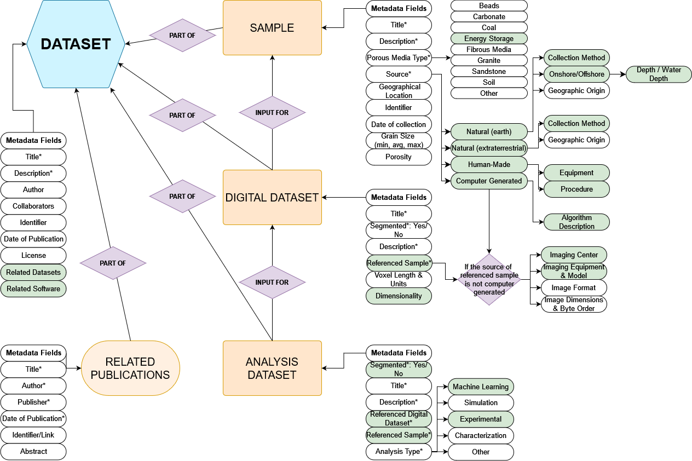
Upload
Before You Begin:
- Account: Ensure you have registered for a TACC account at https://accounts.tacc.utexas.edu/register and are logged into the DPM.
-
Data Organization: Plan the structure of your data. Consider distinguishing between originating raw data and derived analysis data. It's often helpful to organize your files and folders locally on your computer or cloud storage (like Dropbox/UT Box) before uploading. You can refer to the data model for such organization.
-
File Size:
- If your total dataset exceeds 2GB, please email the DPMP staff first to discuss the upload. See the upload options at Uploading Large Files.
- Consider splitting very large volumetric files into smaller, manageable chunks (e.g., under 2GB each) before uploading. This aids users with downloading and processing the data later.
- Compression: Avoid compressing individual image files (e.g., into
.zipor.tar.gzarchives) before uploading if possible. Uploading standard image formats (e.g.,*.tiff,*.raw) directly allows the portal to automatically generate previews (like GIF movies) and perform basic analysis (like histograms). Use the portal's bulk upload options (Dropbox, UTBox) for transferring many files or large files efficiently.
Step 1: Create a Dataset
All data on DPMP belongs to a "Dataset" entity. So, this will be the starting point.
-
Log in to the DPMP and navigate to the
My Dashboardinterface.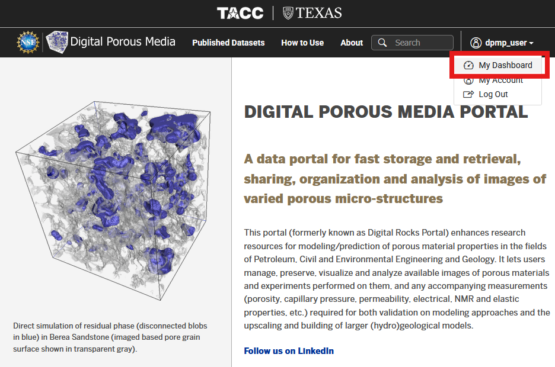
-
Within the dashboard, select the
Data Filesfrom the left column (1 in the image below). Then, navigate toDatasetdirectory (2), and select+ Add(3).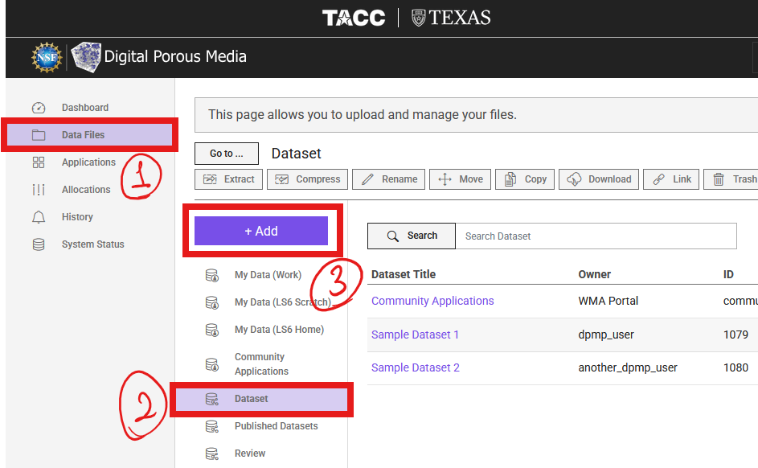
-
From the dropdown list, select
Dataset. -
Fill in the "Dataset Title", "Description", and attach a cover image. Then, click
Add Dataset.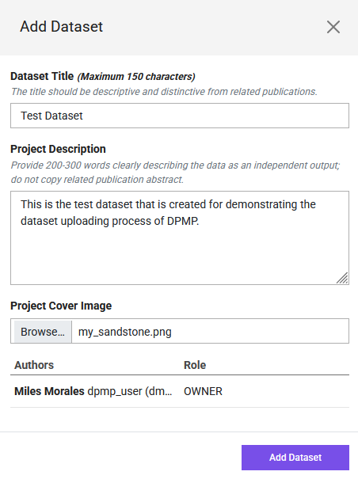 Now, the dataset is created and the portal navigated inside that directory! Congrats 🎉!
Step 2: Add Collaborators
-
To add the dataset members or collaboratiors, select
Manage Authorsfrom the options.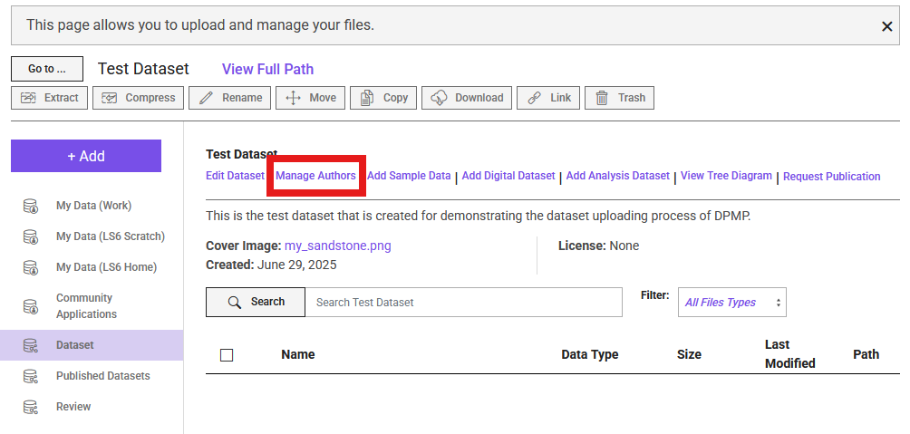
-
From the pop-up menu, search and add the TACC account holder users using their registered DPMP/TACC username or email and select
+ Add, or select+ Add Guest Authorto add contributors without TACC accounts.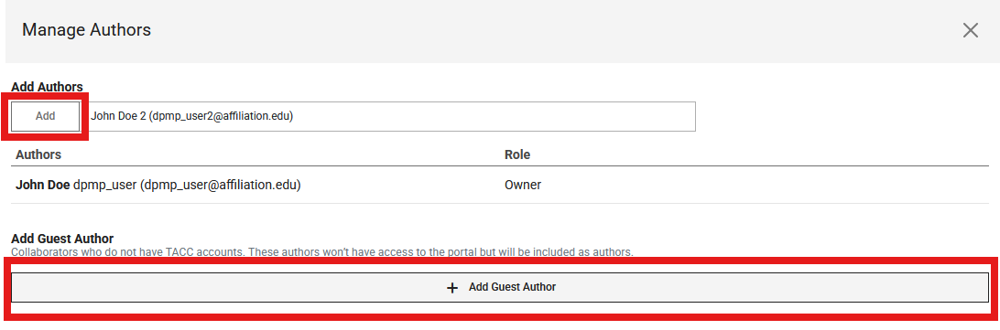
-
TACC user collaborators can edit the dataset and upload data.
Step 3: Add Sample Information
-
Select the
Add Sample Dataoption next the the Manage Authors. Fill in the pop-up form.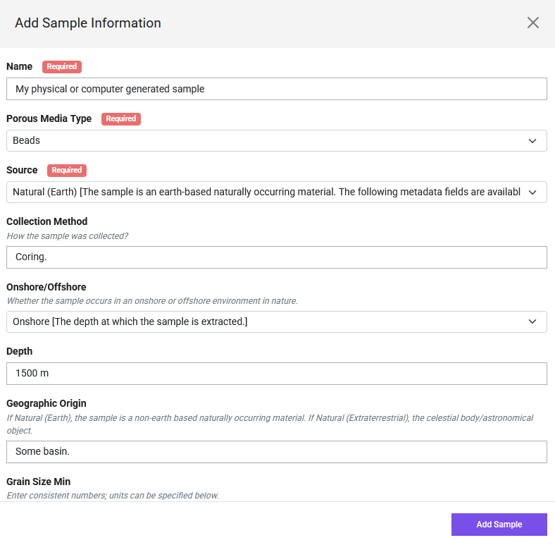
-
After creating the sample information, navigate to the sample directory by clicking at its name.
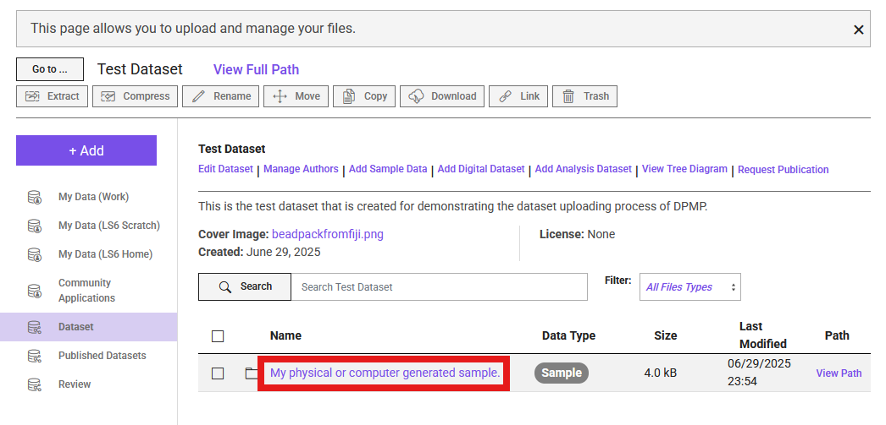
Step 4: Add Digital Dataset
-
Similar to the sample information, this time, select `Add Digital Dataset' option. Fill out the pop-up form.
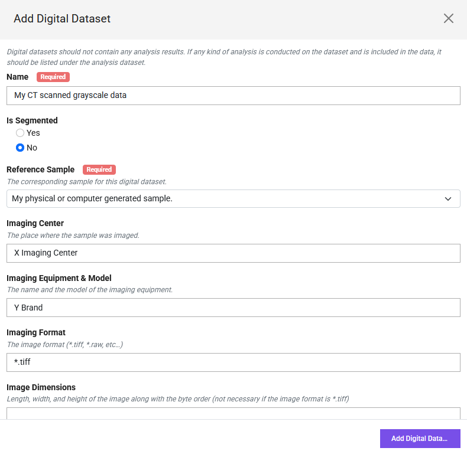
-
Then, similar to what we did after sample information, navigate to the digital dataset folder.
-
Click the purple
+ Addbutton, and selectUpload. This is how that step should look like after selecting files. 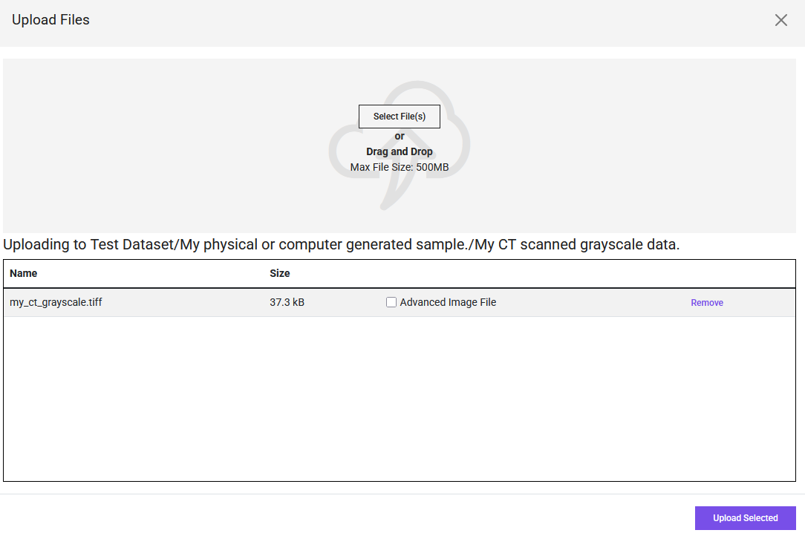
Step 5: Add Analysis Dataset
-
To add the Analysis Dataset, navigate back to the sample information directory. You can do this using the back button of your browser, or navigate through the
Go to ...option on the left of the main dataset name. -
Select
Add Analysis Datasetthis time, and fill out the corresponding information. -
Navigate to its directory after filling out the form, and Upload data similar to the digital dataset.
Step 6: Request Publication
Once all data and corresponding metadata are complete, your dataset is ready for review by our curation team. To initiate the review process, click the Request Publication button (see figure). This will open a review page where you can verify the information you provided and view the data tree for your dataset. After reviewing your submission, if no mandatory information is missing, you will see the Submit Publication Request option. Clicking this will send your review request to our curation team.
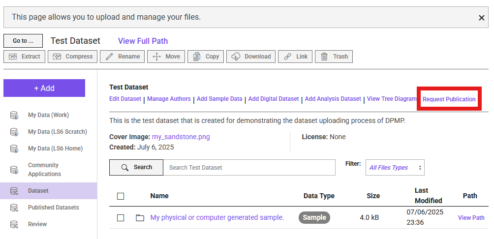
You can expect to hear back from our curation team within one week. If clarification or additional information is needed for your dataset, you will be contacted via email.
Uploading Large Files
We are currently in progress of adopting two different transfer options: Globus, and Cyberduck. Once those systems are tested and fully functional, the instructions here will be updated.